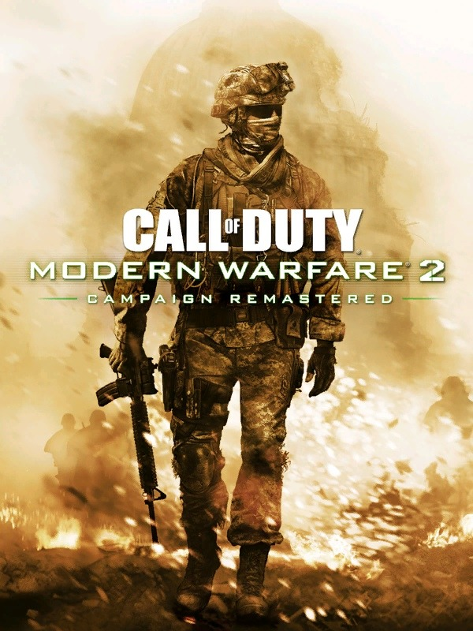

Call of Duty: Modern Warfare 2 (2022)
Descripción
Call of Duty: Modern Warfare 2 (2022) es un shooter en primera persona desarrollado por Infinity Ward y publicado por Activision. Es una secuela directa del reinicio de Modern Warfare (2019) y ofrece una experiencia cinematográfica intensa, nuevos modos multijugador, y una campaña con personajes icónicos como el Capitán Price, Soap y Ghost. El juego incluye un sistema de armas renovado, gráficos realistas, y jugabilidad táctica con un enfoque moderno.
Requisitos Mínimos
- Sistema operativo: Windows 10 de 64 bits
- Procesador: Intel Core i3-6100 o AMD Ryzen 3 1200
- Memoria: 8 GB de RAM
- Gráficos: NVIDIA GeForce GTX 960 o AMD Radeon RX 470
- DirectX: Versión 12
- Almacenamiento: 125 GB de espacio disponible
Requisitos Recomendados
- Sistema operativo: Windows 10/11 de 64 bits
- Procesador: Intel Core i5-6600K o AMD Ryzen 5 1600X
- Memoria: 16 GB de RAM
- Gráficos: NVIDIA GeForce RTX 3060 o AMD Radeon RX 6600 XT
- DirectX: Versión 12
- Almacenamiento: 125 GB en SSD